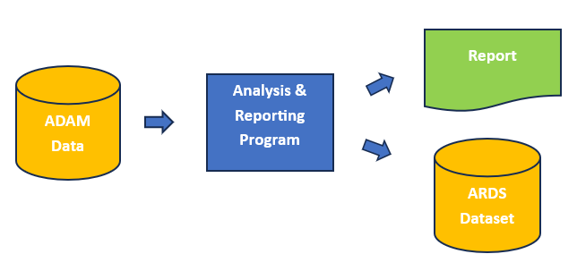

The functions in the ards package are written so that they can be integrated into a standard Table, Listing, and Figure (TLF) program. In some cases, the program does not even need to be restructured to accommodate the ards functions. This approach is called creating an ARDS in parallel.
Parallel ARDS Example
Let us look at such an example. In this demonstration, we will create the analysis for a Demographics table, and create the ARDS at the same time.
A diagram of the parallel approach looks like this:

Note the following about the program below:
- The input data is a subset of 10 subjects and some relevant variables to make the program easier to read and understand.
- The
init_ards()function is called once at the top of the program. The values passed will be the same for all rows of the ARDS. - The
add_ards()function identifies variables in the analysis dataset that you want to add to the ARDS. The variable values will be extracted from the analysis data and transformed into the ARDS structure. - The
add_ards()function can be placed in the middle of a data pipeline, and will not interfere with your analysis. - The
add_ards()function is called immediately after the calculations, before any formatting or transformations. The function is called at this point so that the ARDS will contains the original numeric values with full precision. - When the analysis is complete, the
get_ards()is called to retrieve the ARDS dataset. The ARDS dataset is a standard R data frame that can be saved, combined with other analysis results, or passed to another program for additional processing.
library(dplyr)
library(tibble)
library(tidyr)
library(ards)
# Create input data
adsl <- read.table(header = TRUE, text = '
STUDYID DOMAIN USUBJID SUBJID SITEID BRTHDTC AGE AGEU SEX RACE ARMCD ARM
ABC DM ABC-01-049 49 1 11/12/1966 39 YEARS M "WHITE" 4 "ARM D"
ABC DM ABC-01-050 50 1 12/19/1958 47 YEARS M "WHITE" 2 "ARM B"
ABC DM ABC-01-051 51 1 5/2/1972 34 YEARS M "WHITE" 1 "ARM A"
ABC DM ABC-01-052 52 1 6/27/1961 45 YEARS F "WHITE" 3 "ARM C"
ABC DM ABC-01-053 53 1 4/7/1980 26 YEARS F "WHITE" 2 "ARM B"
ABC DM ABC-01-054 54 1 9/13/1962 44 YEARS M "WHITE" 4 "ARM D"
ABC DM ABC-01-055 55 1 6/11/1959 47 YEARS F "BLACK OR AFRICAN AMERICAN" 3 "ARM C"
ABC DM ABC-01-056 56 1 5/2/1975 31 YEARS M "WHITE" 1 "ARM A"
ABC DM ABC-01-113 113 1 2/8/1932 74 YEARS M "WHITE" 4 "ARM D"')
# Create factors for categorical variables
# to get zero counts
adsl$SEX <- as.factor(adsl$SEX)
adsl$RACE <- as.factor(adsl$RACE)
adsl$ARM <- factor(adsl$ARM, levels = c("ARM A", "ARM B", "ARM C", "ARM D"))
# Initalize ARDS
init_ards(studyid = "ABC",
tableid = "01", adsns = "adsl",
population = "safety population",
time = "SCREENING", where = "saffl = TRUE", reset = TRUE)
# Perform analysis on AGE variable
agedf <- adsl |>
select(AGE, ARM) |>
group_by(ARM, .drop = FALSE) |>
summarize(n = n(),
mean = mean(AGE),
std = sd(AGE),
median = median(AGE),
min = min(AGE),
max = max(AGE)) |>
mutate(analvar = "AGE") |>
ungroup() |>
add_ards(statvars = c("n", "mean", "std", "median", "min", "max"),
statdesc = c("N", "Mean", "Std", "Median", "Min", "Max"),
anal_var = "AGE", trtvar = "ARM") |>
transmute(analvar, ARM,
n = sprintf("%d", n),
mean_sd = sprintf("%.1f (%.2f)", mean, std),
median = sprintf("%.1f", median),
min_max = sprintf("%.1f-%.1f", min, max)) |>
pivot_longer(c(n, mean_sd, median, min_max),
names_to = "label", values_to = "stats") |>
pivot_wider(names_from = ARM,
values_from = c(stats)) |>
transmute(analvar, label = c("N", "Mean (Std)", "Median", "Min-Max"),
trtA = `ARM A`, trtB = `ARM B`, trtC = `ARM C`, trtD = `ARM D`)
# View analysis results
agedf
# # A tibble: 4 × 6
# analvar label trtA trtB trtC trtD
# <chr> <chr> <chr> <chr> <chr> <chr>
# 1 AGE N 2 2 2 3
# 2 AGE Mean (Std) 32.5 (2.12) 36.5 (14.85) 46.0 (1.41) 52.3 (18.93)
# 3 AGE Median 32.5 36.5 46.0 44.0
# 4 AGE Min-Max 31.0-34.0 26.0-47.0 45.0-47.0 39.0-74.0
# Get population counts
trt_pop <- count(adsl, ARM) |> deframe()
trt_pop
# ARM A ARM B ARM C ARM D
# 2 2 2 3
# Perform analysis on SEX variable
sexdf <- adsl |>
mutate(denom = trt_pop[paste0(adsl$ARM)]) |>
group_by(SEX, ARM, denom, .drop = FALSE) |>
summarize(cnt = n()) |>
transmute(SEX, ARM, cnt, analvar = "SEX", label = SEX,
pct = if_else(is.na(denom), 0, cnt / denom * 100)) |>
ungroup() |>
add_ards(statvars = c("cnt", "pct"), statdesc = "label",
anal_var = "SEX", trtvar = "ARM") |>
pivot_wider(names_from = ARM,
values_from = c(cnt, pct)) |>
transmute(analvar, label,
trtA = sprintf("%1d (%3.0f%%)", `cnt_ARM A`, `pct_ARM A`),
trtB = sprintf("%1d (%3.0f%%)", `cnt_ARM B`, `pct_ARM B`),
trtC = sprintf("%1d (%3.0f%%)", `cnt_ARM C`, `pct_ARM C`),
trtD = sprintf("%1d (%3.0f%%)", `cnt_ARM D`, `pct_ARM D`))
# View analysis results
sexdf
# # A tibble: 2 × 6
# analvar label trtA trtB trtC trtD
# <chr> <fct> <chr> <chr> <chr> <chr>
# 1 SEX F 0 ( 0%) 1 ( 50%) 2 (100%) 0 ( 0%)
# 2 SEX M 2 (100%) 1 ( 50%) 0 ( 0%) 3 (100%)
# Perform analysis on RACE
racedf <- adsl |>
mutate(denom = trt_pop[paste0(adsl$ARM)]) |>
group_by(RACE, ARM, denom, .drop = FALSE) |>
summarize(cnt = n()) |>
transmute(RACE, ARM, cnt, analvar = "RACE", label = RACE,
pct = if_else(is.na(denom), 0, cnt / denom * 100)) |>
ungroup() |>
add_ards(statvars = c("cnt", "pct"), statdesc = "label",
anal_var = "RACE", trtvar = "ARM") |>
pivot_wider(names_from = ARM,
values_from = c(cnt, pct)) |>
transmute(analvar, label,
trtA = sprintf("%1d (%3.0f%%)", `cnt_ARM A`, `pct_ARM A`),
trtB = sprintf("%1d (%3.0f%%)", `cnt_ARM B`, `pct_ARM B`),
trtC = sprintf("%1d (%3.0f%%)", `cnt_ARM C`, `pct_ARM C`),
trtD = sprintf("%1d (%3.0f%%)", `cnt_ARM D`, `pct_ARM D`))
# View analysis results
racedf
# # A tibble: 2 × 6
# analvar label trtA trtB trtC trtD
# <chr> <fct> <chr> <chr> <chr> <chr>
# 1 RACE BLACK OR AFRICAN AMERICAN 0 ( 0%) 0 ( 0%) 1 ( 50%) 0 ( 0%)
# 2 RACE WHITE 2 (100%) 2 (100%) 1 ( 50%) 3 (100%)
# Combine all analysis into final data frame
final <- bind_rows(agedf, sexdf, racedf)
# View final data frame
# - This data frame is ready for reporting
final
# # A tibble: 8 × 6
# analvar label trtA trtB trtC trtD
# <chr> <chr> <chr> <chr> <chr> <chr>
# 1 AGE N 2 2 2 3
# 2 AGE Mean (Std) 32.5 (2.12) 36.5 (14.85) 46.0 (1.41) 52.3 (18.93)
# 3 AGE Median 32.5 36.5 46.0 44.0
# 4 AGE Min-Max 31.0-34.0 26.0-47.0 45.0-47.0 39.0-74.0
# 5 SEX F 0 ( 0%) 1 ( 50%) 2 (100%) 0 ( 0%)
# 6 SEX M 2 (100%) 1 ( 50%) 0 ( 0%) 3 (100%)
# 7 RACE BLACK OR AFRICAN AMERICAN 0 ( 0%) 0 ( 0%) 1 ( 50%) 0 ( 0%)
# 8 RACE WHITE 2 (100%) 2 (100%) 1 ( 50%) 3 (100%)
# Extract ARDS
# - This data frame can be saved to disc or inserted into a database
ards <- get_ards()
# Remove some variables to improve readability
ards_reduced <- ards |>
select(trtvar, trtval, anal_var, anal_val,
statname, statval)
# View results
ards_reduced
# trtvar trtval anal_var anal_val statname statval
# 1 ARM ARM A AGE <NA> n 2.000000
# 2 ARM ARM B AGE <NA> n 2.000000
# 3 ARM ARM C AGE <NA> n 2.000000
# 4 ARM ARM D AGE <NA> n 3.000000
# 5 ARM ARM A AGE <NA> mean 32.500000
# 6 ARM ARM B AGE <NA> mean 36.500000
# 7 ARM ARM C AGE <NA> mean 46.000000
# 8 ARM ARM D AGE <NA> mean 52.333333
# 9 ARM ARM A AGE <NA> std 2.121320
# 10 ARM ARM B AGE <NA> std 14.849242
# 11 ARM ARM C AGE <NA> std 1.414214
# 12 ARM ARM D AGE <NA> std 18.929694
# 13 ARM ARM A AGE <NA> median 32.500000
# 14 ARM ARM B AGE <NA> median 36.500000
# 15 ARM ARM C AGE <NA> median 46.000000
# 16 ARM ARM D AGE <NA> median 44.000000
# 17 ARM ARM A AGE <NA> min 31.000000
# 18 ARM ARM B AGE <NA> min 26.000000
# 19 ARM ARM C AGE <NA> min 45.000000
# 20 ARM ARM D AGE <NA> min 39.000000
# 21 ARM ARM A AGE <NA> max 34.000000
# 22 ARM ARM B AGE <NA> max 47.000000
# 23 ARM ARM C AGE <NA> max 47.000000
# 24 ARM ARM D AGE <NA> max 74.000000
# 25 ARM ARM A SEX F cnt 0.000000
# 26 ARM ARM B SEX F cnt 1.000000
# 27 ARM ARM C SEX F cnt 2.000000
# 28 ARM ARM D SEX F cnt 0.000000
# 29 ARM ARM A SEX M cnt 2.000000
# 30 ARM ARM B SEX M cnt 1.000000
# 31 ARM ARM C SEX M cnt 0.000000
# 32 ARM ARM D SEX M cnt 3.000000
# 33 ARM ARM A SEX F pct 0.000000
# 34 ARM ARM B SEX F pct 50.000000
# 35 ARM ARM C SEX F pct 100.000000
# 36 ARM ARM D SEX F pct 0.000000
# 37 ARM ARM A SEX M pct 100.000000
# 38 ARM ARM B SEX M pct 50.000000
# 39 ARM ARM C SEX M pct 0.000000
# 40 ARM ARM D SEX M pct 100.000000
# 41 ARM ARM A RACE BLACK OR AFRICAN AMERICAN cnt 0.000000
# 42 ARM ARM B RACE BLACK OR AFRICAN AMERICAN cnt 0.000000
# 43 ARM ARM C RACE BLACK OR AFRICAN AMERICAN cnt 1.000000
# 44 ARM ARM D RACE BLACK OR AFRICAN AMERICAN cnt 0.000000
# 45 ARM ARM A RACE WHITE cnt 2.000000
# 46 ARM ARM B RACE WHITE cnt 2.000000
# 47 ARM ARM C RACE WHITE cnt 1.000000
# 48 ARM ARM D RACE WHITE cnt 3.000000
# 49 ARM ARM A RACE BLACK OR AFRICAN AMERICAN pct 0.000000
# 50 ARM ARM B RACE BLACK OR AFRICAN AMERICAN pct 0.000000
# 51 ARM ARM C RACE BLACK OR AFRICAN AMERICAN pct 50.000000
# 52 ARM ARM D RACE BLACK OR AFRICAN AMERICAN pct 0.000000
# 53 ARM ARM A RACE WHITE pct 100.000000
# 54 ARM ARM B RACE WHITE pct 100.000000
# 55 ARM ARM C RACE WHITE pct 50.000000
# 56 ARM ARM D RACE WHITE pct 100.000000At this point, the analysis is complete, the output report has been created, and the ARDS is available for sharing with stakeholders and sending to downstream processes.
Next Steps: Example 2: ARDS in Serial